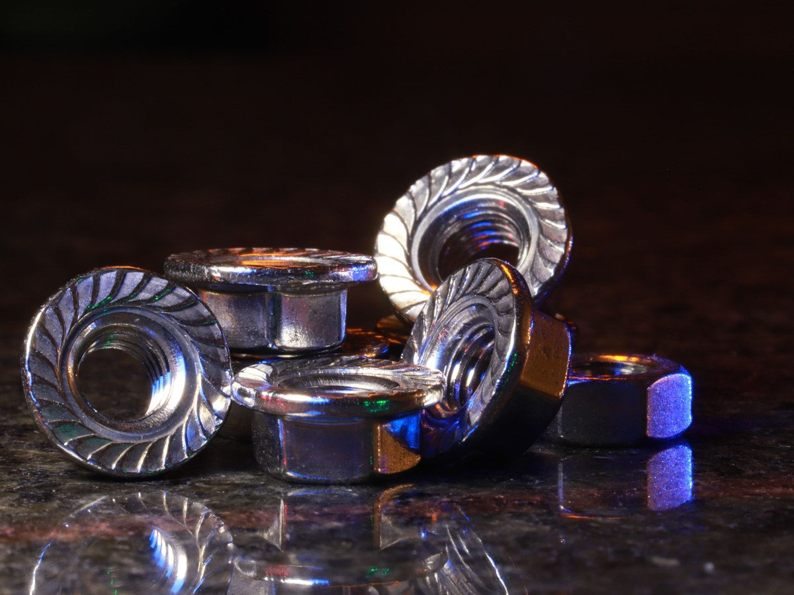
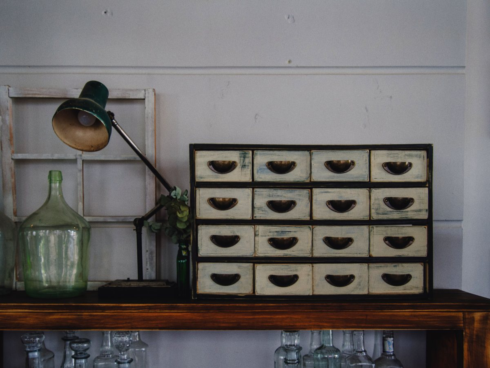

Villarrica · Vicente Reyes 840
El perno que busca, en Vicente Reyes.
Pernería en Villarrica, de lunes a viernes de 9 a 19.
- 124reseñas en Google
- 4,4de nota promedio
- 10horas de corrido, lunes a viernes
- 0teléfonos en su ficha de Google
Antes de ir
¿Qué perno necesito?
Con cuatro datos, se acierta a la primera.
- EL VIEJO
Tráigalo
Es la forma más segura de acertar.
- DIÁMETRO
El grosor
En milímetros o en pulgadas.
- LARGO
Bajo la cabeza
Desde la cabeza hasta la punta.
- ROSCA
Fina o gruesa
Compare los hilos con la tuerca.
El surtido y las medidas los confirma el local.
Traiga el viejo y compare.
En Vicente Reyes 840
El local, en seis datos
-

Lo que la distingue
Pernos
Lo dice su nombre.
-
Lunes a viernes
De 9 a 19
De corrido.
-

El sábado
Por confirmar
Llame antes de ir.
-
Domingo
Cerrado
Vuelva el lunes.
-

En Villarrica
Vicente Reyes 840
A pasos del centro.
-
Antes de ir
Por teléfono
(45) 241 1173.
Horario y teléfono de guías en línea.
124 reseñas y un 4,4.
Vicente Reyes 840
Rosca, tuerca y golilla
Un día en el local
Fotos de referencia: ninguna es del local.
Dónde estamos
Vicente Reyes 840, Villarrica
- Dirección
- Av. Vicente Reyes 840
- Teléfono
- (45) 241 1173
- Lunes a viernes
- 9–19
- Sábado
- Por confirmar
Su ficha de Google no muestra teléfono: el de arriba sale de una guía.
Vicente Reyes 840, Villarrica Abrir en Google Maps
Para el dueño
Qué es real y qué falta
Lo verificado
Dirección, teléfono de guía, horario de semana y las 124 reseñas.
Lo de ejemplo
La guía para elegir el perno y las fotos.
Lo que falta
El sábado, qué medidas tienen, un celular con WhatsApp y un teléfono en su ficha.